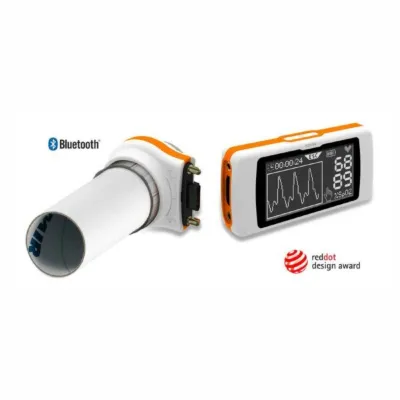

Spirodoc – спирометр + оксиметр
Цена, наличие и срок поставки указываются в коммерческом предложении.
Описание и характеристики
Технические характеристики
Основной блок
• Дисплей: сенсорный ЖК с подсветкой, 128×64 пикселя
• Питание: литий-ионный аккумулятор 3,7 В, 1100 мА·ч, до 50 часов измерений
• Акселерометр: трёхосевой ±2 g, частота 400 Гц
• Размеры и вес: основной блок 101×48×16 мм, 99 г; съёмная турбина 46×47×24 мм, 17 г
Спирометрия
• Датчик потока: двунаправленная цифровая турбина
• Диапазон потока: ±16 л/с
• Точность объёма: ±3 % или 50 мл (большее из значений)
• Точность потока: ±5 % или 200 мл (большее из значений)
• Динамическое сопротивление при 12 л/с: <0,5 см H2O/л/с
• Датчик температуры: полупроводниковый (0–45 °C)
Параметры спирометрии
• FVC, FEV1, FEV1/FVC%, FEV3, FEV3/FVC%, FEV6, FEV1/FEV6%, PEF, FEF25%, FEF50%, FEF75%, FEF25%-75%, FET, расчётный возраст лёгких, экстраполированный объём, FIVC, FIV1, FIV1/FIVC%, PIF, VC, IVC, IC, ERV, FEV1/VC%, VT, VE, Rf, ti, te, ti/t-tot, VT/ti, MVV измеренная, MVV расчётная
Оксиметрия
• Диапазон SpO2: 0–100 %, ±2 % (при SpO2 50–100 %)
• Диапазон пульса: 20–254 уд/мин, ±2 уд/мин или 2 %
Параметры пульсоксиметрии
• SpO2 [исходный, мин., макс., средний], пульс [исходный, мин., макс., средний], T90% [SpO2<90%], T89% [SpO2<89%], T88% [SpO2<88%], T5% [ΔSpO2>5%], Δ-индекс [12 с], события SpO2, события пульса [брадикардия, тахикардия], шагомер, движение [VMU], время записи, время анализа
Анализ сна
• Положение тела, события SpO2, индекс десатурации (ODI), десатурация [среднее значение, средняя длительность, наибольшая длительность, минимум], ΔSpO2 [мин. падение, макс. падение], общие колебания пульса, индекс частоты пульса, NOD89% [SpO2<89%; >5 мин], NOD4% [SpO2 исходный −4%; >5 мин], NOD90% [SpO2<90%; минимум<86%; >5 мин]


Если нужно полное оснащение кабинета или отделения, напишите. Составим список вместе.